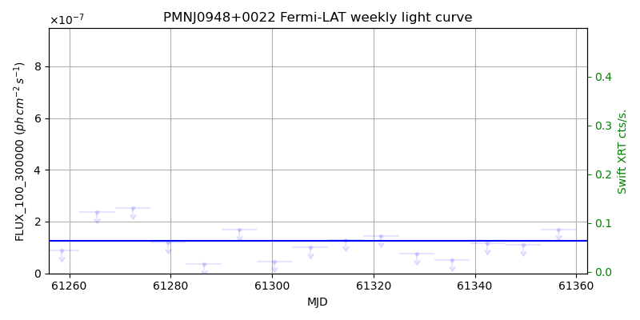

LAT Lightcurve site: https://fermi.gsfc.nasa.gov/ssc/data/access/lat/msl_lc/source/PMN_J0948p0022
Swift site: https://www.swift.psu.edu/monitoring/source.php?source=PMNJ0948+0022
NED: Query
Time of last update of this page: UT: 2026-11-28 16:21 (MJD: 61372.681)
| Property | Value |
|---|---|
| R.A. | 9:48:57.36 |
| Dec. | 0:22:26.4 |
| z | 0.584 |
| 3FGL SpectrumType | LogParabola |
| 3FGL PL Index | |
| 3FGL Flux_100_300000 | 1.27e-07 1 / (s cm2) |
| 3FGL Flux_1000_300000 | 4.19e-09 1 / (s cm2) |
| 3FGL Flux >200 GeV | 3.67e-14 1 / (s cm2) |
| 3FGL Extrap. Crab >200 GeV | 0.00 |
| 3FGL Flux After EBL Absorption >200GeV | 5.90e-15 1 / (s cm2) |
| 3FGL EBL Crab Fraction >200GeV | 0.00 |
| MJD | dMJD | Flux | dFlux | Frac3FGL | FracCrab>200GeV | EBLFracCrab>200GeV |
|---|---|---|---|---|---|---|
| 61367.50 | 0.50 | 4.37e-07 | 0.00e+00 | 0.00 | 0.00 | 0.00 |
| 61368.50 | 0.50 | 6.09e-07 | 0.00e+00 | 0.00 | 0.00 | 0.00 |
| 61369.50 | 0.50 | 5.28e-07 | 0.00e+00 | 0.00 | 0.00 | 0.00 |
| 61370.50 | 0.50 | 4.96e-07 | 1.37e-07 | 3.90 | 0.00 | 0.00 |
| 61371.50 | 0.50 | 4.81e-07 | 0.00e+00 | 0.00 | 0.00 | 0.00 |

| MJD | dMJD | Flux | dFlux | Frac3FGL | FracCrab>200GeV | EBLFracCrab>200GeV |
|---|---|---|---|---|---|---|
| 61335.50 | 3.50 | 5.06e-08 | 0.00e+00 | 0.00 | 0.00 | 0.00 |
| 61342.50 | 3.50 | 1.17e-07 | 0.00e+00 | 0.00 | 0.00 | 0.00 |
| 61349.50 | 3.50 | 1.09e-07 | 0.00e+00 | 0.00 | 0.00 | 0.00 |
| 61356.50 | 3.50 | 1.70e-07 | 0.00e+00 | 0.00 | 0.00 | 0.00 |
| 61363.50 | 3.50 | 1.04e-07 | 0.00e+00 | 0.00 | 0.00 | 0.00 |

| MJD | dMJD | Flux | dFlux | Frac3FGL | FracCrab>200GeV | EBLFracCrab>200GeV |
|---|---|---|---|---|---|---|
| 61367.50 | 0.50 | 2.92e-08 | 0.00e+00 | 0.00 | 0.00 | 0.00 |
| 61368.50 | 0.50 | 1.37e-08 | 0.00e+00 | 0.00 | 0.00 | 0.00 |
| 61369.50 | 0.50 | 4.47e-08 | 0.00e+00 | 0.00 | 0.00 | 0.00 |
| 61370.50 | 0.50 | 3.53e-08 | 0.00e+00 | 0.00 | 0.00 | 0.00 |
| 61371.50 | 0.50 | 2.91e-08 | 0.00e+00 | 0.00 | 0.00 | 0.00 |

| MJD | dMJD | Flux | dFlux | Frac3FGL | FracCrab>200GeV | EBLFracCrab>200GeV |
|---|---|---|---|---|---|---|
| 61335.50 | 3.50 | 3.20e-09 | 0.00e+00 | 0.00 | 0.00 | 0.00 |
| 61342.50 | 3.50 | 3.99e-09 | 0.00e+00 | 0.00 | 0.00 | 0.00 |
| 61349.50 | 3.50 | 7.72e-09 | 0.00e+00 | 0.00 | 0.00 | 0.00 |
| 61356.50 | 3.50 | 4.13e-09 | 0.00e+00 | 0.00 | 0.00 | 0.00 |
| 61363.50 | 3.50 | 1.05e-08 | 0.00e+00 | 0.00 | 0.00 | 0.00 |
--------------------------------------------------------- Using user-supplied coords: 9:48:57.36 0:22:26.4 2000 --------------------------------------------------------- FLWO UT night of: 2026-11-29 Local Sid. @ Midnight: 04:08 Sunset (-15.0) (local, UT): 18:31 01:31 Sunrise (-15.0) (local, UT): 05:53 12:53 Moonrise (local, UT): 21:57 04:57 Moonset (local, UT): Moon phase: 0.72 --------------------------------------------------------- AzTime LSID UT Obj_el Obj_az Mn_el Mn_az Sep. --------------------------------------------------------- 18:31 22:39 01:31 -56.0 22.3 -32.9 32.1 24.1 19:01 23:09 02:01 -53.0 34.2 -29.4 38.9 23.8 19:31 23:39 02:31 -48.9 44.3 -25.4 45.0 23.5 20:01 00:09 03:01 -44.1 52.7 -21.0 50.6 23.2 20:31 00:39 03:31 -38.8 59.8 -16.2 55.6 22.9 21:01 01:09 04:01 -33.1 65.9 -11.1 60.2 22.7 21:31 01:39 04:31 -27.2 71.2 -5.4 64.5 22.4 22:01 02:09 05:01 -21.0 76.0 0.4 68.5 22.2 22:31 02:39 05:31 -14.8 80.3 5.8 72.2 21.9 23:01 03:10 06:01 -8.4 84.5 11.6 75.8 21.7 23:31 03:40 06:31 -1.1 88.4 17.5 79.4 21.5 00:01 04:10 07:01 4.5 92.4 23.6 82.9 21.3 00:31 04:40 07:31 10.8 96.4 29.7 86.5 21.1 01:01 05:10 08:01 17.1 100.6 35.8 90.3 20.9 01:31 05:40 08:31 23.3 105.1 42.0 94.4 20.7 02:01 06:10 09:01 29.4 110.0 48.1 99.1 20.5 02:31 06:40 09:31 35.3 115.5 54.2 104.7 20.3 03:01 07:10 10:01 40.9 121.9 60.1 111.7 20.1 03:31 07:40 10:31 46.1 129.4 65.6 121.1 20.0 04:01 08:10 11:01 50.8 138.3 70.5 134.7 19.8 04:31 08:40 11:31 54.6 149.1 74.0 154.7 19.6 05:01 09:11 12:01 57.2 161.6 75.2 181.1 19.4 05:31 09:41 12:31 58.5 175.6 73.6 206.8 19.2 05:53 10:02 12:53 58.4 186.0 71.0 221.2 19.1 --------------------------------------------------------- Dark hours >55 deg.: 0.00